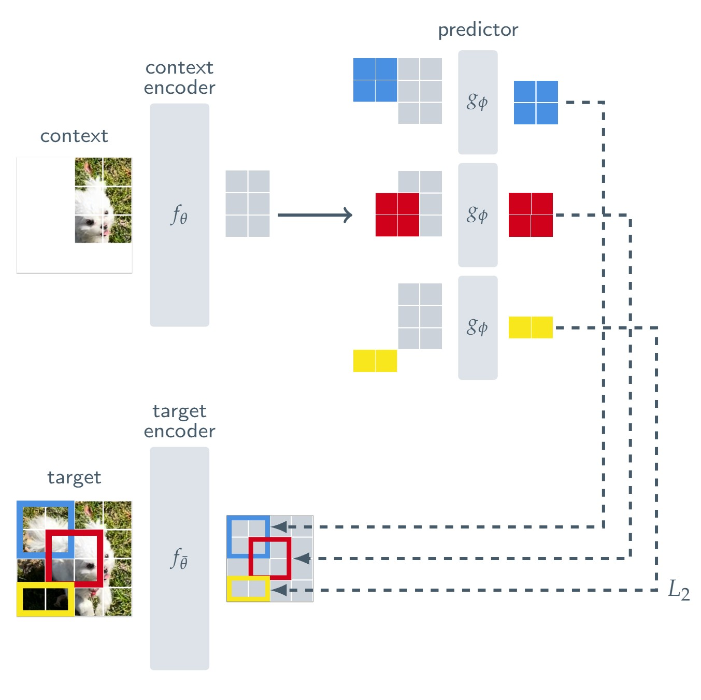
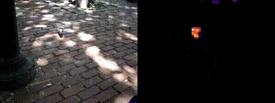
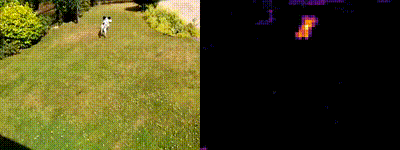

Generative Models → Create Sketches → Faster Databases
Studied generative models to create sketches for better database query optimization:
Sublinear summaries, and three examples.
The usage of “sketch” is somewhat colloquial. It refers to data structures that summarize data in sublinear space — usually in a single pass. Sometimes it refers to random projection, called linear sketching.
How many rows match?
Compare every Table 1 row against every Table 2 row; a line marks a match.
\( |T_1 \Join T_2| = 5 \)
Each match merges into one result row.
Project each table through the same random values per key — 4 rows down to 2.
This inner product approximates the join size \( |T_1 \Join T_2| \).
Project each N-dimensional vector through the same sketching matrix.
\( \langle S^\top x_1,\, S^\top x_2 \rangle \approx \langle x_1, x_2 \rangle \)
A context \( x \) and a target \( y \) are encoded into embeddings \( s_x, s_y \); a predictor takes \( s_x \) and a condition \( z \) and predicts \( s_y \).
Having to predict is what makes the encoder learn richer, information-preserving embeddings.

The CIFAR-10 embedding distribution as it trains.
Plain video (left), attention map demonstrating LeJEPA's emergent salient object tracking behavior (right).


Alon, Matias, and Szegedy, “The space complexity of approximating the frequency moments,” STOC 1996.
Every item pulls the counter one way or the other.
Each item pulls the counter one way. \( Z = \sum_i s(x_i) = 2 \)
Multiply the counter by that colour's own sign.
Was it correct?
Re-draw the signs each round; every round is an independent estimate.
Two streams, one counter each — sketched with the same signs ξ.
Width splits collisions into buckets; depth adds independent rows, combined by median.
The stream keeps growing; each arrival lands in one bucket per row.
Learning a joint distribution to generate sketches.
Tables usually have more than just one column.
Tables usually have more than just one column.
Tables usually have more than just one column.
Every row is an example: the other columns in, the join key out.
Every row is an example: the other columns in, the join key out.
Every row is an example: the other columns in, the join key out.
Every row is an example: the other columns in, the join key out.
Softmax over one embedding per key: the dictionary is an output layer of the model, trained with it.
The same product the loss trained — one dot product against the key embeddings gives the whole sketch.
Each sketch has its own embedding dictionary.
113 Join Order Benchmark queries against PostgreSQL 18.4.
21 tables · 108 columns · 74,190,187 rows · 23 join edges
8.6×faster than PostgreSQL
113 Join Order Benchmark queries · IMDb, 74,190,187 rows
Tsan et al., “Sketched Sum-Product Networks for Joins,” VLDB 2027.
One sketch per factor: \( x \) and \( y \) by their own hashes, \( A \) by the circular convolution of both — bucket \( (h_1(i)+h_2(j)) \bmod w \), sign \( \xi_1(i)\xi_2(j) \).